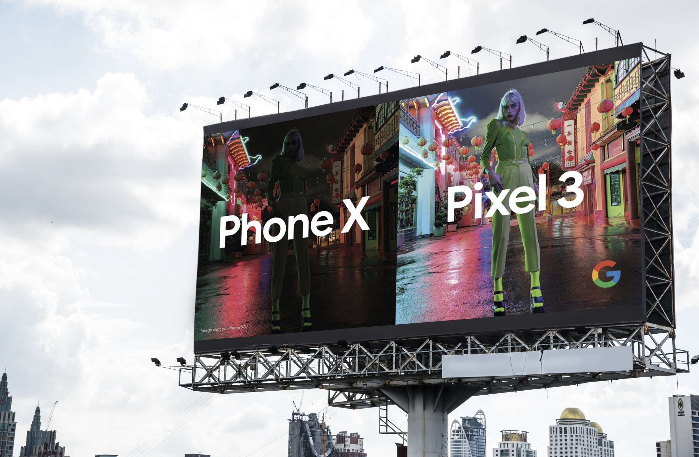

Getting Your Content Right¶

Photo by Thanzi Thanzeer on Unsplash
Build the narrative with your audience¶
How many presentations do you remember thoroughly following through where you were presented with a screen full of content - while to speaker spoke to it for what felt like a good 10mins. A lot of content, especially where there is a narrative to it - it’s best laid out incrementally.
An effective way to communicate a lot of content is to unfold the content by bringing up the elements one at a time as your voice over it - having someone speak and watch changes on the screen will make people follow through the narrative - have a lot of text all at once - ends up in people trying to read through the text and not pay attention to what is being spoken about.
Having said that - it’s important to resist the temptation to add in transitions (or too many of them) to avoid making it distracting. You want something very snappy that can follow the pace at which you speak over.
The “So what?” Question¶
The ultimate litmus test for justifying why a slide should be in the deck is if you can have a strong narrative for the ‘show what’ question. So what would be a good ‘so what narrative’? - Anything that shares a unique perspective - industry trends, opportunities, threats - any insight that the audience can benefit from in their role, especially in roles that inform longer-term strategy - will get them to sit up and take notice.
The ‘so what’ aspect becomes even more important when you are making a case for your technology as the solution to the opportunity or problem presented. The ability to solve the problem is considered table stakes, what makes it most effective is if you couple that with the - why are you uniquely positioned to solve the problem better, cheaper, faster, or whatever your key differentiator is.
Alignment, Alignment, Alignment¶
It’s always tempting to take the content you used in a similar pitch or the content that was put together by product marketing. While delivering a technical pitch these slides are your ‘accelerators’ but the end of the day alignment is key.
All the data that you collected during the prework for the pitch comes in handy at this point. Tailor the content according to the value and economic drivers to align with your audience.
Show me the value?¶
It’s not unusual to be presenting an unsolicited presentation - it’s also not unusual that you are presenting a technical solution for a problem that is already working in some shape or form for your audience. Here is very this step gets critical.
Your content should articulate - the differentiator in the approach, the value as a result, and the approach to leveraging it - in a way that acknowledges the risks involved in the new approach and has a solid mitigation strategy associated with it.
After all, a value proposition is - where you can demonstrate how you create value, and the value created is by far exceeds the cost of implementing it and all the associated risks have a clear mitigation plan. You can further strengthen the proposition by doing a comparison with the approach they currently have and by articulating the cost of not improving that over some time.
A recent example of a food delivery company engagement - where we discussed how our managed service for routing algorithm was going to be far better than their in-house developed one - beyond making a case for performance like time to compute, efficiency metrics - we had to build a case around unit economics and factoring in direct/indirect costs like running the engineering team to run and manage that capability, cost of keeping that up to date and also the focus it would take away from them doing innovation in the customer experience side of things that was their core differentiator in the market.
Talk solutions, not products¶
When do you last remember going for a movie and making of the projector being used or the brand of chairs in the movie hall? Neither do I - we do, however - assuming it was a good movie - remember the experience.
Now assume you went to see a movie and you were first engaged in explaining how the projector works, what its specifications are, and how long it took for the provision to import them. Clearly - that would be something that would switch you off.
Unfortunately, a lot of technical presentations become about the products - This call out is to draw the analogy on how out of order it can feel for the audience if the presentation becomes about the individual products and not about the solution - the expected outcome.
Avoid showing a catalog of products - unless you are summarizing the art of possible after you have laid out the immediate solution that needs attention - honestly - no one cares in a business context unless it’s clear what will it do for them - usually, it takes a combination of products to solve a problem - instead cover a solution-based approach in your content.
Is your content speaking to the right person?¶
As obvious as it sounds - we do sometimes tend to re-use elements of presentations across various personas. Landing a solution, delivering a technical presentation usually involves getting buy-in from various stakeholders with different roles to play in the decision-making process.
Each individual has a specific focus area, level of understanding of the problem statement, and hence a dimension that they can relate to.
It’s important to focus on the level of detail to fit the audiences - e.g. don’t talk about a technical architecture with a CEO, or talk about marketing trends with a CTO